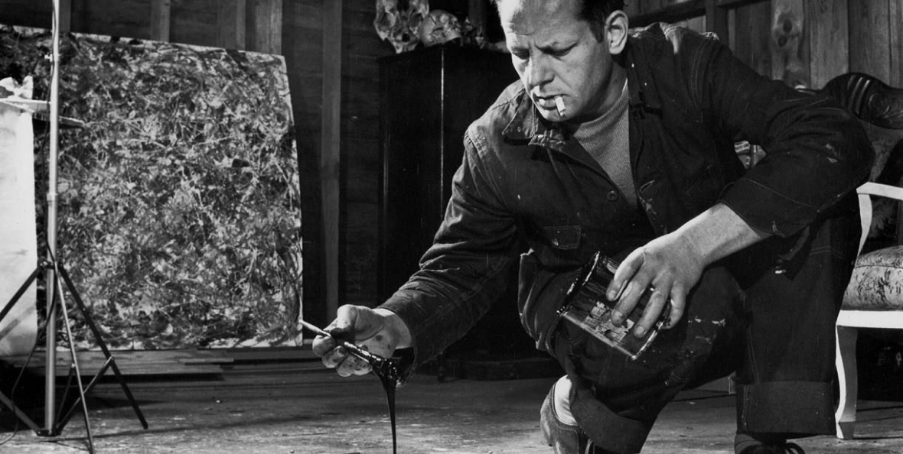

L'obiettivo della psicologia dell'arte è cercare di individuare e comprendere quali processi mentali siano coinvolti nella produzione artistica, quali fattori determinino la poetica e le peculiarità di un artista, ma anche quali processi psicologici caratterizzino la fruizione, l'apprezzamento o il non apprezzamento estetico, e i sentimenti di empatia o simpatia.
La psicologia dell'arte è una disciplina che si occupa di indagare e spiegare i processi psicologici coinvolti nelle esperienze di produzione e di fruizione di un'opera d'arte.
Molteplici e variabili sono i suoi territori di confine: dall'estetica alla storia, alla teoria e alla critica dell'arte, dalla letteratura alla medicina e alla psichiatria.
Per quanto riguarda più specificamente le relazioni con l'arte rivestono particolare rilevanza gli studi della Psicologia della Gestalt e della teoria della percezione, spesso mediati da prospettive cognitiviste, e quelli che fanno capo alle diverse scuole psicoanalitiche.
Salvador Dalí, Marchese di Pùbol, (Figueres, 11 maggio 1904 – Figueres, 23 gennaio 1989), è stato un pittore, scultore, scrittore, fotografo, cineasta, designer, sceneggiatore e mistico spagnolo.
Dotato di grande immaginazione e con il vezzo di assumere atteggiamenti stravaganti, irritò coloro che hanno amato la sua arte e infastidì i suoi detrattori, dal momento che i suoi modi eccentrici hanno in alcuni casi catturato l'attenzione più delle sue opere.
Jackson Pollock è stato un pittore americano noto per il suo stile di pittura astratto e gestuale, comunemente chiamato "dripping" o "action painting". Le sue opere, realizzate principalmente durante gli anni '40 e '50, sono state fondamentali nel movimento dell'espressionismo astratto.
Sebbene Pollock non avesse formalmente studiato psicologia, il suo approccio all'arte è stato spesso interpretato come una manifestazione di aspetti psicologici profondi.
